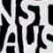
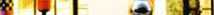

|
On the road, h 11:14
Stiamo arrivando a Vienna dopo esserci lasciati alle spalle Linz.
Qualche programma nuovo: Graz, Ljubljana, Istria e Trieste.
Il viaggio continua.
• SMS, h 14:59
• SMS, h 15:54
Wien, h 19:00
SMS di Josto sul cellulare di Davide:
"Solo. Il Danubio non è blu. Gradini al sole, quasi allagato da traghetto, colpiti: culo, sigari, calze, tabacco, notepad, occhiali. Tuiea, l'acqua."
• SMS, h 21:58
|
Wien (A), h 00:04
Scritta su una banchina del Danubio:
"It's better to burn out than to fade"
Mojo
h 02:30
In ostello a Vienna... un bel posto, confortevole. Studentato di inverno, ostello d'estate.
Abbiamo mangiato cibo greco su di una banchina del Danubio, dalla quale siamo stati costretti ad allontanarci a causa di un temporale. Che acqua! Una vera tempesta! Io e Josto ci siamo avviati a piedi... l'abbiamo presa tutta.
Una tempesta nella piazza del Duomo di Vienna è qualcosa di davvero unico. Un'atmosfera d'altra epoca.
Siamo arrivati completamente zuppi ma sereni e rilassati... Jo parla di ossa, io solo solo che mi sento più... morbido!
Abbiamo girato tutto il pomeriggio, prima in quattro (abbiamo pranzato in un locale giapponese e mangiato per la prima volta sushi: ottimo!!) e poi separati. Jo sul Danubio a scrivere e meditare, Luca non ne ho la minima idea, io e Davide per il centro di Vienna a far fotografie. Ho girato con un teleobiettivo: mi sono divertito un sacco...
• SMS, h 08:57
• SMS, h 13:01
h 14:32

Kunsthaus, Wien.

• SMS, h 15:37
L'eclisse s'eclissa: la grande inculata di fine millennio?
|